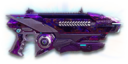

← Back to the Eclipse VE3A comparison
Sage Guide · Vanu Sovereignty · Light Assault / Engineer
The reward for completing the Master Carbines directive: a Solstice VE3 that trades its magazine for a heat gauge, keeps a laser sight built into the frame, and hides an Impulse Launcher under the barrel. No reloads, no ammo packs — just a gauge to respect and a launcher that throws you across the map.
The one-line verdict: a Solstice with a heat gauge, a built-in laser sight and an Impulse Launcher: the same 0.52-second close-range kill, but you never run dry. Its price is the gauge: 27 shots, then you cool it or it stops you — and every rail attachment costs you the launcher.

The Eclipse VE3A · Vanu Sovereignty · 27-shot heat gauge
Every enemy infantry has 1,000 health (500 shield + 500 health). Your bullet does 143 damage up close, fading to 112 at long range. Headshots count double, leg shots count less (×0.9). That gives you three numbers worth memorising:
| Range | Damage | Head | Chest | Legs | Chest vs shielded Heavy |
|---|---|---|---|---|---|
| Close · 0–10 m | 143 | 4 | 7 | 8 | 11 |
| Mid · 10–39 m | 143→125 | 4 | 8 | 9 | 12 |
| Far · 39–60 m+ | 125→112 | 5 | 9 | 10 | 13 |
Perfect-accuracy times to kill: 4 headshots ≈ 0.26 s, 7 chest shots ≈ 0.52 s up close. In real fights you'll land maybe half your rounds — still, this is why the head matters so much on this gun. Maximum damage per second is 1,664. The breakpoints are exact: 7 chest shots to 10.2 m, 8 to 39.0 m, 9 past that.
Full power to 10 m, then a steady slide to minimum at 60 m. The teal line shows Soft Point Ammunition, which stretches full power to 15 m.
One gun, four fighting styles. The right technique changes with distance — use the range finder below to see what your bullets do at any range, then learn the four bands underneath it.
How to fight hereAim down sights at the upper chest and neck. Fire in bursts of 5–8 — your recoil climbs up and to the right into the head for free damage.
Aim: centre of the chest, from the hip. Keep moving.
Scoping in costs you time and halves your move speed — at arm's length that gets you killed. The Eclipse's built-in laser sight makes hipfire genuinely tight (a 1.0° standing cone — the 0.14 m ring at 8 m in section 04). Strafe side to side (A/D) while firing so you're hard to track, and let your jump jets carry you out if the fight turns.
Aim: neck / upper chest. Bursts of 5–8 rounds.
This is where the gun earns its keep: full 143 damage, fast handling, and a 0.52 s chest kill. Start your crosshair at the neck — the recoil climbs up and to the right, so it walks your shots up and across the head, and 4 head hits end the fight in a quarter of a second. Strafe while scoped; you're slower, but a moving target still beats a still one.
Aim: chest. Bursts of 5–8 rounds, pause between them.
Damage is sliding toward 112 and your cone of fire blooms if you hold the trigger. Fire a burst, release for a split second to let accuracy reset, fire again. The recoil drifts up and to the right (14–17°), so pull your mouse gently down and to the left. Crouch or stand still when you can — both tighten your shots.
Aim: chest. Taps of 3–5 rounds at exposed targets only.
At 112 damage you need 9 chest shots — a long, loud advertisement of your position. Take these shots at stationary or fleeing targets, medics reviving, and engineers on turrets. Otherwise, your better play is to close the distance behind cover — as a Light Assault you can cross ground no Heavy can. Knowing when not to shoot is a skill too.
Your accuracy is decided by two things before skill even enters it: what your body is doing (your stance sets the starting cone of fire) and what your finger is doing (holding the trigger grows that cone with every shot). The Eclipse has no fire-mode switch — full-auto only — so "firing modes" are something you do with your finger, not a setting on the gun. And then there is the third thing no other Solstice has: the heat gauge.
| Stance | Starting cone | What it means for you |
|---|---|---|
| Sprinting | 5.0° | Wide — the hipfire cap is 7.0°, and sprinting puts you most of the way there. Never start firing from a sprint. |
| Hipfire, moving | 1.34° | Walking or strafing from the hip. Fine inside ~8 m, leaks rounds past the target beyond it. |
| Hipfire, standing | 1.0° | Your point-blank default — tighter than the Solstice's 1.5°, thanks to the built-in laser. The 0.14 m ring at 8 m in section 04 is this stance drawn out. |
| Hipfire, crouched | 0.67° | The tightest hipfire you have (1.0° if you crouch-walk) — a 0.09 m ring at 8 m. Crouch when holding a doorway from the hip. |
| Aimed (ADS), feet planted | 0.10° | Ten times tighter than hipfire standing. |
| Aimed (ADS), crouched | 0.10° | Same as standing — crouching buys you nothing aimed. Crouch-walking is 0.15°, still excellent. |
| Aimed (ADS), strafing | 0.25° | Two and a half times wider than planted, and you move at half speed (0.5×). Strafe between bursts to stay hard to hit; plant your feet during each burst. |
| Mode | How your finger does it | Use it at |
|---|---|---|
| The mag dump | Hold the trigger and don't let go | Point blank only, or suppressing a doorway. Bloom maxes out fast — past ~8 rounds you're spraying, not aiming — and you'll burn the whole 27-shot gauge in 2.3 seconds. |
| Bursts — the default | Hold for 5 rounds, release ~0.15 s, hold again. 6–8 rounds is fine while you're learning | Almost everything, 8–50 m. Each release resets the cone, so every burst starts at 0.10°. |
| Tap-fire | Short taps of 3–5, or single clicks, with a real pause between | 50 m and out, at exposed or stationary targets. Slow, but every round goes where the dot is. |
Standing still, your cone holds its starting size for the first 3 aimed shots (4 from the hip) before per-shot bloom starts widening it — the first burst is free accuracy, which is one more reason the ideal burst is 5 rounds. Aimed bloom caps at a 3.0° cone — and at 0.05° per shot you'd need 58 shots to reach it, more than the 27-shot gauge holds, so you cannot max out the aimed cone in one gauge. Horizontal recoil is 0.2° per shot with a 0.5° tolerance, the recoil angle is 14–17° up and to the right, and recovery runs at 18°/s — the sideways walk is small but always to the right, which is why the climb reads as up-and-right and fades fast between bursts.
Here is what makes the Eclipse different from the Solstice it is built from. There is no magazine and no reserve ammo. Every shot pours heat into a gauge; stop shooting and the gauge drains on its own. You never reload because you are empty — you manage heat because the gun will stop you if you don't.
| Heat number | Value | What it means |
|---|---|---|
| Shots before overheat | 27 | One full gauge of fire — 2.3 seconds held down. Census data: 999 heat capacity at 37 heat per shot, so 26 shots leave you just short of the line and the 27th crosses it. |
| Cooling delay | 0.343 s | After your last shot, the gauge sits for just over a third of a second before it starts draining. |
| Cooling rate | 351 / s | About 9½ shots' worth of heat per second. A 7-shot kill (259 heat) is fully cooled in ~1.1 seconds; a 20-shot burst (741 heat) in ~2.5 seconds. |
| Overheat penalty | 1.65 s | Fire the shot that fills the gauge and the gun locks for 1.65 seconds — then it still has to cool all the way to zero before it fires again. Total silence: roughly 4.5 seconds. |
| Manual reload (R key) | 1.65 s | Pressing R clears the gauge in 1.65 seconds, at any heat level. This is your "reload" — the only one the gun has. |
| Reserve ammo | None | No ammo pool at all. You never run dry, never visit a terminal, never pick up ammo. The overheat is the price of that freedom. |
After a fight, if the gauge is high, press R — 1.65 seconds and it is clear. But if you fired fewer than about 12 shots, just wait: passive cooling (0.343 s delay + heat ÷ 351) clears that faster than a 1.65-second reload. High gauge → press R. Low gauge → keep moving, it cools itself.
27 shots is 3 kills at perfect accuracy up close (7 shots each) — realistically 2 with misses. That is the gun's whole economy: never dump a gauge on one doorway, and never let it hit the top mid-fight. Treat the last 7 shots of heat as your emergency reserve — one more close-range kill — not your working gauge.
A target 30 m away, aiming down sights. Press and hold FIRE (mouse, touch, or hold Space with the button focused) and watch the holes walk wider the longer you hold — that's firing from an ever-growing cone. Release, let the cone reset, fire again. Aim for bursts of 5; 6–8 is tolerable while you're new. This practice window is shared by the whole Sage series: it's driven by a weapon profile plugged into the window — here the Eclipse's (698 RPM, 0.10° starting cone, 0.05° bloom per shot, target at 30 m) — and the spread is drawn at true scale from those numbers.
Cone of fire — fills as you hold, empties when you release.
Your bursts will be graded here — green at 5 rounds, tolerable up to 8.
Some things are easier to show than to say. Here's what your bullets actually do: how wide hipfire spreads at 8 metres, what a good burst rhythm looks like, and what the 2x sight really changes. The hands-on version — holding the trigger yourself — is the practice window in section 03.
A full-size target 8 m away — an arm's-length room fight. The rings show where hipfire rounds land around your aim point (the chest). Sizes are drawn to scale from the gun's real cone-of-fire numbers.
Read it this way: standing still, the 0.14 m ring sits well inside the chest — most rounds hit a target this size, which is why hipfire works point-blank. Move and it grows to 0.19 m — still inside the torso — and crouch and it shrinks to 0.09 m. The rings are this small because the laser sight is built into the gun: the Census hipfire numbers already include it, so there is no separate laser ring to draw — the Solstice this gun is built from spreads 1.5° standing, a third wider. Past ~10 m the rings only grow with distance while the man doesn't: the exact moment to switch to aiming down sights, where the spread shrinks to a dot. (Ring sizes use the real geometry: spread diameter = 2 × distance × tan(cone ÷ 2).)
Every shot widens your cone of fire ("bloom"). Releasing the trigger for a heartbeat resets it. Same 18 rounds, two very different outcomes:
The target pattern is bursts of about 5 rounds — that's the ideal. Bursts of 6–8 are fine while you're new (call it newbie tolerance). Past that, the bloom (0.05° per shot aimed, 0.08° from the hip) keeps growing with every shot, so the extra bullets mostly decorate the wall behind your enemy instead of hitting him. Short bursts also leave you heat for the second enemy — remember, the gauge is only 27 shots, and 18 rounds is two-thirds of it.
No zoom. The target at 35 m is small but the view is wide open — you see the crate, the tower, and the next enemy coming. Fast to aim, nothing blocks your edges. Best inside ~40 m.
Same target, same 35 m — but he looks twice as tall, so placing shots on his chest and head gets much easier. The price: your view narrows to the round window, the crate and tower are gone, and close targets feel fast and huge. Best at 25–50 m.
The 1x sight comes free with the gun; the 2x is 30 certs. 1x for awareness, 2x for precision. Most veterans carry both and swap per base — indoors 1x, open ground 2x.
Old guides will tell you directive weapons take no attachments. That was true before the March 2022 Arsenal Update — it isn't anymore. The Eclipse takes attachments in every slot: optics, barrel, rail and ammo. Two honest limits: there is no High Velocity Ammunition and no extended magazine — the heat gauge can't be extended — and anything you fit on the rail replaces the built-in Impulse Launcher. Everything below is an optional sidegrade, not an upgrade. Buy in the order shown and stop whenever the gun feels right.
A clean Vanu holo sight with no zoom: a red dot-and-circle reticle above the top rail. The Eclipse hands it to you free — auto-granted with the gun — and honestly it's your best all-round option.
Good: everywhere indoors and out to ~40 m — which is most PlanetSide fights.
Bad: picking out targets past 50 m; that's what the 2x is for.
Doubles your view magnification with a circle-and-dot reticle. The cheapest meaningful choice on this page.
Good: open-field bases, tower fights, and your 25–50 m burst game. Swap between 1x and 2x per fight.
Bad: tight indoor rooms — the zoom makes close targets feel fast and huge.
Night-vision sight: enemies glow white against a dark view, and it sees through smoke.
Good: night fights, smoky doorways, spotting infiltrators by their outline.
Bad: daytime and long range — its view is short-ranged and washes out in bright light.
VMS / V3 Holo (3.4x) and OG-4 / CSZ (4x) — sniper-style magnification on an automatic carbine.
Good: almost nothing — recoil magnifies too, and tunnels your vision.
Bad: any fight inside 30 m, which is where you'll spend most of your time with this gun.
The Eclipse's recoil is a gentle up-and-right climb with no wild sideways drift. Plenty of veterans run this slot empty forever.
Good: your first weeks. Spend certs on your grip and suit slots first.
Bad: nothing — there's no downside to an empty slot.
Cuts vertical recoil by 30% (0.25° → ~0.18° per shot), but widens hipfire by 15% and puts you on enemy minimaps from 35 m farther away.
Good: aimed mid-range play, if the climb bothers you.
Bad: close-quarters builds — it taxes the hipfire this gun is built for.
Aimed bloom grows 20% slower (0.05° → 0.04° per shot), so long bursts stay tighter — but you move 20% slower while aimed (0.5× → 0.4×).
Good: tap-fire and lane-holding builds at 40 m and out.
Bad: aggressive Light Assault play, where ADS strafe speed is your defence.
Hipfire bloom grows 40% slower — much steadier hip spraying. But vertical recoil rises 20% when you do aim (0.25° → 0.30° per shot).
Good: a dedicated close-quarters build.
Bad: general play — it taxes the aimed shooting you'll do most.
Hides your muzzle flash and keeps you off the minimap when firing — but damage falls off 20 m sooner and bullets fly 15% slower (464 → ~394 m/s).
Good: flanking as a Light Assault, where staying off the minimap is the whole play.
Bad: open fights at 30 m and out, where the slower bullet needs real lead.
Hides your muzzle flash so your own view stays clear at night — but you appear on enemy minimaps from 15 m farther away when you fire.
Good: night fights where your own flash blinds you. A comfort pick, nothing more.
Bad: as an early purchase — it changes no fight outcome. Buy it last, if ever.
Fires a non-lethal grenade that knocks back you and enemy infantry on impact — press Gear Slot 1 (default "1") to switch to it. It is a movement tool first: fire it at your feet mid-jump and it throws you onto rooftops and over walls no other carbine can reach. It is fitted whenever no other rail attachment is chosen, and adds 0.25 s to your equip time.
Good: Light Assault rooftop routes and escapes — the reason to fly this gun.
Bad: nothing — until you fit a rail attachment, which removes it entirely.
Cuts side-to-side recoil by 25% (0.2° → 0.15°), keeping your bursts on a single target. Tiny cost: weapon swap is 0.15 s slower. It replaces the Impulse Launcher.
Good: the default for aimed, mid-range play — leave it on until you deliberately build for mobility.
Bad: it costs you the launcher — the gun's signature trick.
A single-shot shotgun round for point-blank emergencies — one shell, then it needs its own reload. It replaces the Impulse Launcher and adds 0.25 s to equip time.
Good: a panic button when something rounds the corner inside 5 m.
Bad: as an everyday rail — one shell, then you're back to the carbine anyway.
Lobs a smoke grenade to cover a crossing or a revive. Replaces the Impulse Launcher; adds 0.25 s to equip time.
Good: squad play, covering a push across open ground.
Bad: solo play — you rarely need your own smoke.
The first shot of each burst kicks 60% less — but side-to-side recoil rises 10% on everything after it. On this gun the first shot is the expensive one (2.8× multiplier), so the trade is better here than on most carbines. Replaces the Impulse Launcher.
Good: disciplined burst and tap-fire at 40 m+, where every burst starts fresh.
Bad: long held bursts — the +10% sideways walk eats the benefit once you're past the first shot.
A torch whose beam reveals cloaked infiltrators. Toggle it with the attachment key (X by default). Replaces the Impulse Launcher.
Good: hunting a stalker infiltrator camping your capture point — sweep corners with it.
Bad: as your everyday rail — it gives zero accuracy help, and the beam advertises your position.
Full 143 damage now reaches to 15 m instead of 10 m (the teal line on the chart above). Cost: bullets fly 10% slower (464 → ~418 m/s).
Good: nearly always — most duels happen at 10–20 m, exactly where this extends your 7-shot / 4-headshot kill.
Bad: long-range duels against runners, where the slower bullet needs more lead. A small price.
Projectiles fly much larger — easier hits at close range — but the headshot bonus is cut by 80%, so headshots are barely better than body shots. Aim centre-mass and let the fat bullets do the work. There is no High Velocity Ammunition for this gun.
Good: close-quarters hipfire builds where you never aim for the head anyway.
Bad: any build that relies on the 4-headshot kill — this ammo throws it away.
0 certs · Day one
What the directive hands you. Bare — but the gun underneath is already a top-tier carbine, with a launcher no Solstice has. Learn the heat gauge on this before spending anything.
200 certs · Recommended
The best value in this whole guide. Covers every fight from a doorway to a tower courtyard — at the price of the launcher.
200 certs · Indoor brawler
Built to hipfire down stairwells and hold a capture point room — and the launcher still gets you onto the roof above it. Swap back to the All-Rounder outdoors.
230 certs · Long lanes
For tower fights and open ground: tighter aimed bloom, a steadier first shot, and a zoomed view for 40–60 m taps. Weak up close — so don't fight up close. No High Velocity Ammunition exists for this gun, so range comes from the barrel and grip, not the ammo.
As a Light Assault your jump jets are the first weapon: rooftops, ledges and tower struts put you above heads that are watching doorways. The Impulse Launcher adds a second jump — fire it at your feet mid-air for roofs no jet alone reaches. Engineers: use cover the same way — arrive at your range before opening fire, never sprint across the open at theirs.
Headshots deal double damage: 4 kills up close versus 7 to the chest. Don't aim at the head directly — aim at the neck and let the gun's natural up-and-right climb carry shots two and three into the skull. It's the single biggest damage upgrade you own, and it's free.
Every shot widens your cone of fire. Holding the trigger past ~8 rounds at range means later bullets fly around your target, not into it. Five rounds is the ideal burst; release the trigger for a heartbeat between bursts — your accuracy resets and your hits per gauge roughly double.
Pressing R clears the heat gauge in 1.65 s, at any heat level — but an overheat locks you out for ~4.5 seconds. Fired fewer than ~12 shots? Just wait — passive cooling clears that faster than a reload. Fired more? Duck behind cover and press R early. Treat the last few shots of heat as your emergency reserve, not your working gauge.
Walk with your crosshair at head height, pointed where an enemy's head will appear — a doorway edge, a corner, stairs. Most veterans lose fights in the half-second spent dragging the crosshair onto target. While firing, tap A/D to strafe: a moving target is dramatically harder to headshot back.
Your damage, accuracy and heat gauge all shine at close-mid range. Sprint between cover, use buildings and rocks as stepping stones, and arrive at your range before opening fire. The player who chooses the range usually wins the duel — make it you.
Every gun has a price. Here's where the Eclipse pays — and the habit that covers each hole.
A held trigger burns the whole gauge in 2.3 seconds — and the overheat that follows costs you ~4.5 seconds of silence.
Play around it: burst discipline (habit 3) and early reloads (habit 4). The gauge is a budget: spend it in 5-round bursts and it lasts the whole fight.
The Solstice carries 30 in a magazine. Your 27 vanish fast when suppressing a doorway, and there's no extended-magazine option on a heat weapon at all.
Play around it: burst, don't suppress. Your 1.65 s heat reload is fast — reloading often is the design, not a failure — and you never have to find ammo afterwards.
Your first shot kicks 2.8× as hard as the rest, on top of 0.25° vertical recoil per shot — and it always pulls up and to the right (14–17°). In a long burst your aim walks off the target's head fast — you'll see this clearly in the VR drill below.
Play around it: pull your mouse down and to the left while firing (the climb is up-and-right). The Angled Forward Grip cuts that first-shot kick by 60% if it keeps bothering you.
It takes 0.55 s to bring the gun up — and any underbarrel, including the Impulse Launcher you start with, adds 0.25 s, taking it to 0.80 s. Slow if a fight surprises you with your sidearm out.
Play around it: keep the Eclipse in your hands when a fight is near, and swap weapons behind cover, never in the open.
Past 60 m you're at 112 damage: 9 chest shots, 13 against a shielded Heavy, with bloom fighting you the whole way. Snipers and battle rifles own that ground.
Play around it: tap-fire at exposed targets only, and spend the rest of the time closing distance. You're a Light Assault — the rooftops are your address.
Every rail attachment removes the Impulse Launcher — the one thing no other carbine has. Fit a Forward Grip and you trade your escape tool and rooftop routes for 25% less sideways recoil.
Play around it: decide before you cert: if the launcher is why you fly this gun, leave the rail empty. The grip is better on paper; the launcher wins fights the paper never sees.
Open the world map, travel to VR Training, and run these on the target dummies. Five minutes before a play session beats an hour of dying confused.
Aim at a wall 20 m away and empty a full gauge without touching the mouse. Watch the bullet pattern climb up and to the right — that's your gun's fingerprint. Repeat, this time pulling down-left, until the group stays fist-sized.
Walk the dummy range keeping your crosshair glued to neck height the whole time, snapping to each new target without dipping to the floor or sky. Slow and clean first; speed comes on its own.
At 30–40 m, kill dummies with bursts of 5–8, releasing the trigger fully between bursts. If a burst goes wide, shorten it. Goal: whole kills without a single wild round.
Pick a dummy, stand 5 m away, and circle it with A/D while hipfiring it down without stopping. This is your point-blank survival skill — the one that fires while your movement does the defending.
Fire exactly 24 rounds at dummies, stop, press R — feel the 1.65-second clear. Then fire until the gun overheats, once, so you know what the lockout feels like and never choose it in a real fight. Then practise stopping at ~20 shots and letting the gauge cool while you reposition — that pause is free.